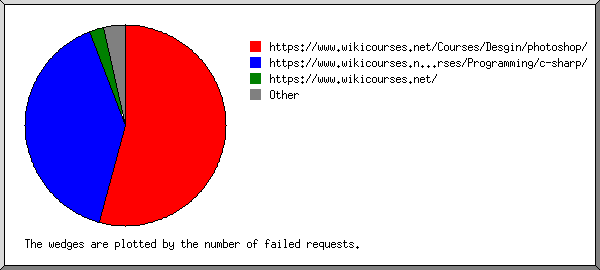

Web Server Statistics for wikicourses.net
Web Server Statistics for wikicourses.net
Program started on Tue, Mar 31 2020 at 4:15 PM.
Analyzed requests from Mon, Mar 16 2020 at 10:37 PM to Tue, Mar 31 2020 at 2:46 PM (14.67 days).
Web Server Statistics for wikicourses.netProgram started on Tue, Mar 31 2020 at 4:15 PM.
Analyzed requests from Mon, Mar 16 2020 at 10:37 PM to Tue, Mar 31 2020 at 2:46 PM (14.67 days).
(Go To: Top | General Summary | Monthly Report | Daily Summary | Hourly Summary | Domain Report | Organization Report | Redirected Referrer Report | Failed Referrer Report | Referring Site Report | Browser Report | Browser Summary | Operating System Report | Status Code Report | File Size Report | File Type Report | Directory Report | Request Report)
Figures in parentheses refer to the 7-day period ending Mar 31 2020 at 4:15 PM.
Successful requests: 1,076 (693)
Average successful requests per day: 73 (98)
Successful requests for pages: 414 (131)
Average successful requests for pages per day: 28 (18)
Failed requests: 531 (70)
Redirected requests: 45 (5)
Distinct files requested: 95 (223)
Distinct hosts served: 494 (576)
Corrupt logfile lines: 1
Data transferred: 16.44 megabytes (14.58 megabytes)
Average data transferred per day: 1.12 megabytes (2.08 megabytes)
(Go To: Top | General Summary | Monthly Report | Daily Summary | Hourly Summary | Domain Report | Organization Report | Redirected Referrer Report | Failed Referrer Report | Referring Site Report | Browser Report | Browser Summary | Operating System Report | Status Code Report | File Size Report | File Type Report | Directory Report | Request Report)
Each unit ( ) represents 15 requests for pages or part thereof.
) represents 15 requests for pages or part thereof.
| month | #reqs | #pages | |
|---|---|---|---|
| Mar 2020 | 1076 | 414 |    |
Busiest month: Mar 2020 (414 requests for pages).
(Go To: Top | General Summary | Monthly Report | Daily Summary | Hourly Summary | Domain Report | Organization Report | Redirected Referrer Report | Failed Referrer Report | Referring Site Report | Browser Report | Browser Summary | Operating System Report | Status Code Report | File Size Report | File Type Report | Directory Report | Request Report)
Each unit () represents 3 requests for pages or part thereof.
| day | #reqs | #pages | |
|---|---|---|---|
| Sun | 166 | 48 | |
| Mon | 276 | 69 |  |
| Tue | 236 | 53 | |
| Wed | 129 | 98 |  |
| Thu | 83 | 61 | |
| Fri | 101 | 44 | |
| Sat | 85 | 41 | |
(Go To: Top | General Summary | Monthly Report | Daily Summary | Hourly Summary | Domain Report | Organization Report | Redirected Referrer Report | Failed Referrer Report | Referring Site Report | Browser Report | Browser Summary | Operating System Report | Status Code Report | File Size Report | File Type Report | Directory Report | Request Report)
Each unit () represents 2 requests for pages or part thereof.
| hour | #reqs | #pages | |
|---|---|---|---|
| 0 | 35 | 7 | |
| 1 | 13 | 8 | |
| 2 | 9 | 9 | |
| 3 | 57 | 38 | |
| 4 | 15 | 12 | |
| 5 | 78 | 7 | |
| 6 | 7 | 7 | |
| 7 | 39 | 11 | |
| 8 | 19 | 18 | |
| 9 | 89 | 11 | |
| 10 | 60 | 21 | |
| 11 | 58 | 17 | |
| 12 | 50 | 37 | |
| 13 | 59 | 7 | |
| 14 | 9 | 9 | |
| 15 | 26 | 7 | |
| 16 | 30 | 4 | |
| 17 | 10 | 7 | |
| 18 | 32 | 12 | |
| 19 | 63 | 44 | |
| 20 | 68 | 25 | |
| 21 | 90 | 41 | |
| 22 | 94 | 48 | |
| 23 | 66 | 7 | |
(Go To: Top | General Summary | Monthly Report | Daily Summary | Hourly Summary | Domain Report | Organization Report | Redirected Referrer Report | Failed Referrer Report | Referring Site Report | Browser Report | Browser Summary | Operating System Report | Status Code Report | File Size Report | File Type Report | Directory Report | Request Report)
Listing domains, sorted by the amount of traffic.
| #reqs | %bytes | domain |
|---|---|---|
| 1076 | 100% | [unresolved numerical addresses] |
(Go To: Top | General Summary | Monthly Report | Daily Summary | Hourly Summary | Domain Report | Organization Report | Redirected Referrer Report | Failed Referrer Report | Referring Site Report | Browser Report | Browser Summary | Operating System Report | Status Code Report | File Size Report | File Type Report | Directory Report | Request Report)
Listing the top 20 organizations by the number of requests, sorted by the number of requests.
| #reqs | %bytes | organization |
|---|---|---|
| 338 | 33.50% | 162.158 |
| 188 | 24.36% | 172.68 |
| 108 | 16.68% | 172.69 |
| 75 | 7.19% | 108 |
| 71 | 11.44% | 141.101 |
| 57 | 0.11% | 87 |
| 50 | 0.05% | 221.229 |
| 21 | 5.08% | 188.114 |
| 16 | 0.61% | 173.245 |
| 16 | 0.31% | 173.252 |
| 14 | 0.01% | 116 |
| 12 | 0.04% | 212.32 |
| 11 | 0.04% | 158.69 |
| 11 | 0.03% | 34 |
| 8 | 0.01% | 54 |
| 8 | 0.17% | 104 |
| 6 | 0.02% | 93 |
| 6 | 0.02% | 35 |
| 5 | 0.01% | 65.154 |
| 3 | 0.01% | 198.98 |
| 52 | 0.33% | [not listed: 30 organizations] |
(Go To: Top | General Summary | Monthly Report | Daily Summary | Hourly Summary | Domain Report | Organization Report | Redirected Referrer Report | Failed Referrer Report | Referring Site Report | Browser Report | Browser Summary | Operating System Report | Status Code Report | File Size Report | File Type Report | Directory Report | Request Report)
Listing referring URLs, sorted by the number of redirected requests.
| #reqs | URL |
|---|---|
| 6 | http://wikicourses.net/ |
| 5 | http://wikicourses.net/wp-login.php |
| 1 | http://wikicourses.net/MainCourse/Programming |
| 1 | http://wikicourses.net/Courses/Programming/php/Learn-PHP-5-In-Arabic/3 |
(Go To: Top | General Summary | Monthly Report | Daily Summary | Hourly Summary | Domain Report | Organization Report | Redirected Referrer Report | Failed Referrer Report | Referring Site Report | Browser Report | Browser Summary | Operating System Report | Status Code Report | File Size Report | File Type Report | Directory Report | Request Report)

Listing referring URLs, sorted by the number of failed requests.
(Go To: Top | General Summary | Monthly Report | Daily Summary | Hourly Summary | Domain Report | Organization Report | Redirected Referrer Report | Failed Referrer Report | Referring Site Report | Browser Report | Browser Summary | Operating System Report | Status Code Report | File Size Report | File Type Report | Directory Report | Request Report)

Listing referring sites, sorted by the number of requests.
| #reqs | site |
|---|---|
| 569 | http://wikicourses.net/ |
| 68 | https://wikicourses.net/ |
| 20 | http://www.wikicourses.net/ |
| 2 | http://www.bing.com/ |
| 2 | https://l.facebook.com/ |
| 1 | https://www.google.com/ |
| 1 | https://www.google.fr/ |
| 1 | http://stuffgate.com/ |
(Go To: Top | General Summary | Monthly Report | Daily Summary | Hourly Summary | Domain Report | Organization Report | Redirected Referrer Report | Failed Referrer Report | Referring Site Report | Browser Report | Browser Summary | Operating System Report | Status Code Report | File Size Report | File Type Report | Directory Report | Request Report)
Listing the top 40 browsers by the number of requests for pages, sorted by the number of requests for pages.
| #reqs | #pages | browser |
|---|---|---|
| 57 | 57 | Mozilla/5.1 (Windows NT 6.1; WOW64; rv:36.0) Gecko/20100101 Firefox/36.0 |
| 50 | 50 | Mozilla/5.0 (iPhone; CPU iPhone OS 10_3 like Mac OS X) AppleWebKit/602.1.50 (KHTML |
| 27 | 27 | Mozilla/5.0 (compatible; CloudFlare-AlwaysOnline/1.0; +http://www.cloudflare.com/always-online) AppleWebKit/534.34 |
| 16 | 16 | Mozilla/5.0 (Windows NT 10.0; Win64; x64) AppleWebKit/537.36 (KHTML, like Gecko) Chrome/63.0.3239.132 Safari/537.36 |
| 16 | 16 | Go-http-client/1.1 |
| 15 | 15 | Mozilla/5.0 (Windows NT 10.0; Win64; x64) AppleWebKit/537.36 (KHTML, like Gecko) Chrome/78.0.3904.108 Safari/537.36 |
| 19 | 13 | facebookexternalhit/1.1 (+http://www.facebook.com/externalhit_uatext.php) |
| 188 | 12 | Mozilla/5.0 (X11; Linux x86_64) AppleWebKit/537.36 (KHTML, like Gecko) HeadlessChrome/78.0.3882.0 Safari/537.36 |
| 31 | 11 | Mozilla/5.0 (compatible; Dataprovider.com) |
| 9 | 9 | Mozilla/5.0 (Windows NT 10.0; Win64; x64) AppleWebKit/537.36 (KHTML, like Gecko) Chrome/78.0.3904.97 Safari/537.36 |
| 90 | 8 | Mozilla/5.0 (Windows NT 10.0; Win64; x64) AppleWebKit/537.36 (KHTML, like Gecko) Chrome/80.0.3987.149 Safari/537.36 |
| 9 | 7 | Mozilla/5.0 (X11; Linux x86_64) AppleWebKit/537.36 (KHTML, like Gecko) Chrome/70.0.3538.77 Safari/537.36 |
| 7 | 7 | Mozilla/5.0 (Windows NT 10.0; Win64; x64) AppleWebKit/537.36 (KHTML, like Gecko) Chrome/74.0.3729.169 Safari/537.36 |
| 6 | 6 | Mozilla/5.0 zgrab/0.x |
| 5 | 5 | Mozilla/5.0 (Windows N\\T 10.0; WOW64) AppleWebKit/537.36 (KHTML, like Gecko) Chrome/67.0.3396.79 Safari/537.16 |
| 4 | 4 | Mozilla/5.0 (Windows NT 10.0; Win64; x64) AppleWebKit/537.36 (KHTML, like Gecko) Chrome/76.0.3809.132 Safari/537.36 |
| 4 | 4 | Mozilla/5.0 (Windows NT 6.3; WOW64; Trident/7.0; rv:11.0) like Gecko |
| 10 | 4 | Mozilla/5.0 (compatible; Googlebot/2.1; +http://www.google.com/bot.html) |
| 4 | 4 | Mozilla/5.0 (Windows NT 6.1; WOW64) AppleWebKit/534.24 (KHTML, like Gecko) Chrome/11.0.696.71 Safari/534.24 |
| 3 | 3 | Mozilla/5.0 (compatible; CloudFlare-AlwaysOnline/1.0;+http://www.cloudflare.com/always-online) |
| 3 | 3 | Mozilla/5.0 (X11; Ubuntu; Linux i686; rv:28.0) Gecko/20100101 Firefox/28.0 |
| 3 | 3 | Wget/1.20 (linux-gnu) |
| 6 | 3 | Mozilla/5.0 (X11; Linux x86_64) AppleWebKit/537.36 (KHTML, like Gecko) Chrome/49.0.2623.75 Safari/537.36 Google Favicon |
| 3 | 3 | Mozilla/5.0 (compatible; DomainSONOCrawler/0.1; +http://domainsono.com) |
| 3 | 3 | Mozilla/5.0 (X11; Ubuntu; Linux x86_64; rv:58.0) Gecko/20100101 Firefox/58.0 |
| 22 | 3 | Mozilla/5.0 (X11; Linux x86_64) AppleWebKit/537.36 (KHTML, like Gecko) Chrome/80.0.3987.132 Safari/537.36 |
| 9 | 3 | Mozilla/5.0 (Linux; Android 6.0.1; Nexus 5X Build/MMB29P) AppleWebKit/537.36 (KHTML, like Gecko) Chrome/41.0.2272.96 Mobile Safari/537.36 (compatible; Googlebot/2.1; +http://www.google.com/bot.html) |
| 25 | 3 | Mozilla/5.0 (X11; Linux x86_64) AppleWebKit/537.36 (KHTML, like Gecko) HeadlessChrome/78.0.3904.70 Safari/537.36 |
| 3 | 2 | Mozilla/5.0 (compatible; bingbot/2.0; +http://www.bing.com/bingbot.htm) |
| 21 | 2 | Mozilla/5.0 (iPhone; CPU iPhone OS 13_3_1 like Mac OS X) AppleWebKit/605.1.15 (KHTML, like Gecko) Version/13.0.5 Mobile/15E148 Safari/604.1 |
| 2 | 2 | Mozilla/4.0 (compatible; MSIE 6.0; Windows NT 5.1; SV1) |
| 2 | 2 | Mozilla/5.0 (Macintosh; Intel Mac OS X 10_15_2) AppleWebKit/537.36 (KHTML, like Gecko) Chrome/79.0.3945.117 Safari/537.36 |
| 46 | 2 | Mozilla/5.0 (Windows NT 10.0; Win64; x64; rv:74.0) Gecko/20100101 Firefox/74.0 |
| 6 | 2 | Mozilla/5.0 (Windows NT 6.1; Win64; x64) AppleWebKit/537.36 (KHTML, like Gecko) Chrome/76.0.3809.100 Safari/537.36 |
| 2 | 2 | Mozilla/5.0 (Windows NT 10.0; Win64; x64) AppleWebKit/537.36 (KHTML, like Gecko) Chrome/58.0.3029.110 Safari/537.36 |
| 2 | 2 | Mozilla/5.0 (Windows NT 10.0; WOW64; Trident/7.0; rv:11.0) like Gecko/20100101 Firefox/12.0 |
| 8 | 2 | Mozilla/5.0 (compatible; ips-agent) |
| 20 | 2 | Mozilla/4.0 (compatible; MSIE 8.0; Windows NT 6.1; WOW64; Trident/4.0; SLCC2; .NET CLR 2.0.50727; .NET CLR 3.5.30729; .NET CLR 3.0.30729; Media Center PC 6.0; .NET4.0C; .NET4.0E; InfoPath.2) |
| 2 | 2 | Mozilla/5.0 (Windows NT 10.0) AppleWebKit/537.36 (KHTML, like Gecko) Chrome/40.0.2214.93 Safari/537.36 |
| 2 | 2 | CheckMarkNetwork/1.0 (+http://www.checkmarknetwork.com/spider.html) |
| 305 | 77 | [not listed: 81 browsers] |
(Go To: Top | General Summary | Monthly Report | Daily Summary | Hourly Summary | Domain Report | Organization Report | Redirected Referrer Report | Failed Referrer Report | Referring Site Report | Browser Report | Browser Summary | Operating System Report | Status Code Report | File Size Report | File Type Report | Directory Report | Request Report)
Listing browsers with at least 1 request for a page, sorted by the number of requests for pages.
| # | #reqs | #pages | browser |
|---|---|---|---|
| 1 | 619 | 144 | Safari |
| 588 | 132 | Safari/537 | |
| 5 | 5 | Safari/534 | |
| 23 | 4 | Safari/604 | |
| 1 | 1 | Safari/602 | |
| 1 | 1 | Safari/605 | |
| 1 | 1 | Safari/533 | |
| 2 | 164 | 92 | Firefox |
| 57 | 57 | Firefox/36 | |
| 3 | 3 | Firefox/51 | |
| 3 | 3 | Firefox/28 | |
| 3 | 3 | Firefox/55 | |
| 3 | 3 | Firefox/58 | |
| 2 | 2 | Firefox/12 | |
| 5 | 2 | Firefox/50 | |
| 2 | 2 | Firefox/53 | |
| 2 | 2 | Firefox/46 | |
| 2 | 2 | Firefox/65 | |
| 3 | 75 | 61 | Mozilla |
| 1 | 1 | Mozilla/1 | |
| 4 | 86 | 53 | Netscape (compatible) |
| 5 | 16 | 16 | Go-http-client |
| 16 | 16 | Go-http-client/1 | |
| 6 | 19 | 13 | facebookexternalhit |
| 19 | 13 | facebookexternalhit/1 | |
| 7 | 27 | 9 | MSIE |
| 21 | 3 | MSIE/8 | |
| 3 | 3 | MSIE/6 | |
| 2 | 2 | MSIE/9 | |
| 1 | 1 | MSIE/10 | |
| 8 | 4 | 4 | Wget |
| 4 | 4 | Wget/1 | |
| 9 | 2 | 2 | Mojolicious (Perl) |
| 10 | 2 | 2 | CheckMarkNetwork |
| 2 | 2 | CheckMarkNetwork/1 | |
| 11 | 1 | 1 | PleskBot |
| 12 | 27 | 1 | e.ventures Investment Crawler (eventures.vc) |
| 13 | 1 | 1 | msnbot |
| 1 | 1 | msnbot/2 | |
| 14 | 1 | 1 | curl |
| 1 | 1 | curl/7 | |
| 15 | 2 | 1 | Opera |
| 1 | 1 | Opera/9 | |
| 16 | 1 | 1 | Pandalytics |
| 1 | 1 | Pandalytics/1 | |
| 17 | 1 | 1 | PycURL |
| 1 | 1 | PycURL/7 | |
| 17 | 0 | [not listed: 1 browser] |
(Go To: Top | General Summary | Monthly Report | Daily Summary | Hourly Summary | Domain Report | Organization Report | Redirected Referrer Report | Failed Referrer Report | Referring Site Report | Browser Report | Browser Summary | Operating System Report | Status Code Report | File Size Report | File Type Report | Directory Report | Request Report)

Listing operating systems, sorted by the number of requests for pages.
| # | #reqs | #pages | OS |
|---|---|---|---|
| 1 | 406 | 180 | Windows |
| 134 | 89 | Unknown Windows | |
| 258 | 83 | Windows NT | |
| 14 | 8 | Windows XP | |
| 2 | 152 | 90 | OS unknown |
| 3 | 84 | 65 | Macintosh |
| 4 | 390 | 61 | Unix |
| 389 | 60 | Linux | |
| 1 | 1 | Other Unix | |
| 5 | 33 | 7 | Known robots |
(Go To: Top | General Summary | Monthly Report | Daily Summary | Hourly Summary | Domain Report | Organization Report | Redirected Referrer Report | Failed Referrer Report | Referring Site Report | Browser Report | Browser Summary | Operating System Report | Status Code Report | File Size Report | File Type Report | Directory Report | Request Report)
Listing status codes, sorted numerically.
| #reqs | status code |
|---|---|
| 952 | 200 OK |
| 19 | 206 Partial content |
| 42 | 301 Document moved permanently |
| 3 | 302 Document found elsewhere |
| 105 | 304 Not modified since last retrieval |
| 13 | 401 Authentication required |
| 514 | 404 Document not found |
| 2 | 405 Method not allowed |
| 2 | 500 Internal server error |
(Go To: Top | General Summary | Monthly Report | Daily Summary | Hourly Summary | Domain Report | Organization Report | Redirected Referrer Report | Failed Referrer Report | Referring Site Report | Browser Report | Browser Summary | Operating System Report | Status Code Report | File Size Report | File Type Report | Directory Report | Request Report)
| size | #reqs | %bytes |
|---|---|---|
| 0 | 179 | |
| 1B- 10B | 0 | |
| 11B- 100B | 28 | 0.01% |
| 101B- 1kB | 233 | 0.66% |
| 1kB- 10kB | 329 | 7.43% |
| 10kB-100kB | 280 | 61.80% |
| 100kB- 1MB | 27 | 30.09% |
(Go To: Top | General Summary | Monthly Report | Daily Summary | Hourly Summary | Domain Report | Organization Report | Redirected Referrer Report | Failed Referrer Report | Referring Site Report | Browser Report | Browser Summary | Operating System Report | Status Code Report | File Size Report | File Type Report | Directory Report | Request Report)
Listing extensions with at least 0.1% of the traffic, sorted by the amount of traffic.
| #reqs | %bytes | extension |
|---|---|---|
| 103 | 41.23% | .jpg [JPEG graphics] |
| 58 | 16.40% | .ttf |
| 130 | 10.90% | .png [PNG graphics] |
| 24 | 9.85% | .woff2 |
| 120 | 6.70% | .js [JavaScript code] |
| 136 | 6.63% | .css [Cascading Style Sheets] |
| 413 | 3.33% | [directories] |
| 6 | 3.32% | .woff |
| 54 | 1.60% | [no extension] |
| 32 | 0.03% | [not listed: 5 extensions] |
(Go To: Top | General Summary | Monthly Report | Daily Summary | Hourly Summary | Domain Report | Organization Report | Redirected Referrer Report | Failed Referrer Report | Referring Site Report | Browser Report | Browser Summary | Operating System Report | Status Code Report | File Size Report | File Type Report | Directory Report | Request Report)

Listing directories with at least 0.01% of the traffic, sorted by the amount of traffic.
| #reqs | %bytes | directory |
|---|---|---|
| 232 | 52.09% | /images/ |
| 83 | 26.82% | /fonts/ |
| 141 | 9.39% | /css/ |
| 120 | 6.70% | /js/ |
| 437 | 4.08% | [root directory] |
| 27 | 0.60% | /Courses/ |
| 18 | 0.27% | /MainCourse/ |
| 1 | 0.04% | /uploads/ |
| 17 | 0.01% | [not listed: 1 directory] |
(Go To: Top | General Summary | Monthly Report | Daily Summary | Hourly Summary | Domain Report | Organization Report | Redirected Referrer Report | Failed Referrer Report | Referring Site Report | Browser Report | Browser Summary | Operating System Report | Status Code Report | File Size Report | File Type Report | Directory Report | Request Report)

Listing files with at least 20 requests, sorted by the number of requests.
| #reqs | %bytes | last time | file |
|---|---|---|---|
| 413 | 3.33% | Mar/31/20 2:46 PM | / |
| 12 | 0.02% | Mar/22/20 7:15 PM | /?C=D;O=A |
| 12 | 0.02% | Mar/22/20 7:15 PM | /?C=M;O=A |
| 12 | 0.02% | Mar/22/20 7:15 PM | /?C=N;O=D |
| 12 | 0.02% | Mar/22/20 7:15 PM | /?C=S;O=A |
| 10 | 0.01% | Mar/21/20 10:39 AM | /?C=D%3BO%3DA |
| 10 | 0.02% | Mar/22/20 7:15 PM | /?C=D;O=D |
| 10 | 0.01% | Mar/21/20 10:39 AM | /?C=M%3BO%3DA |
| 10 | 0.02% | Mar/22/20 7:15 PM | /?C=N;O=A |
| 10 | 0.01% | Mar/21/20 10:39 AM | /?C=N%3BO%3DD |
| 10 | 0.02% | Mar/22/20 7:15 PM | /?C=M;O=D |
| 10 | 0.01% | Mar/21/20 10:39 AM | /?C=S%3BO%3DA |
| 10 | 0.02% | Mar/22/20 7:15 PM | /?C=S;O=D |
| 29 | 0.13% | Mar/31/20 1:16 PM | /js/rating.js |
| 29 | 0.32% | Mar/31/20 1:16 PM | /js/plugins.js |
| 29 | 4.52% | Mar/31/20 1:16 PM | /js/jquery.min.js |
| 28 | 1.24% | Mar/31/20 1:16 PM | /js/bootstrap.min.js |
| 27 | 0.50% | Mar/31/20 1:16 PM | /css/devicon.min.css |
| 27 | 3.32% | Mar/31/20 1:16 PM | /css/bootstrap.min.css |
| 27 | 1.59% | Mar/31/20 1:16 PM | /css/style.css |
| 26 | 0.48% | Mar/31/20 1:16 PM | /css/bootstrap.rtl.css |
| 26 | 6.00% | Mar/31/20 1:16 PM | /fonts/NotoKufiArabic-Regular.ttf |
| 26 | 0.69% | Mar/31/20 1:16 PM | /css/font-awesome.min.css |
| 26 | 6.03% | Mar/31/20 1:16 PM | /fonts/NotoKufiArabic-Bold.ttf |
| 24 | 9.85% | Mar/31/20 1:16 PM | /fonts/fontawesome-webfont.woff2 |
| 23 | 0.34% | Mar/31/20 1:16 PM | /images/logo-mobile.png |
| 23 | 2.46% | Mar/31/20 1:16 PM | /images/logo.png |
| 22 | 9.14% | Mar/31/20 1:16 PM | /images/intro-bg.jpg |
| 20 | 2.46% | Mar/31/20 1:16 PM | /images/PDFiles.png |
| 20 | 1.45% | Mar/31/20 1:16 PM | /images/wikicourses.png |
| 20 | 3.57% | Mar/31/20 1:16 PM | /images/mutaz_net.png |
| 211 | 42.59% | Mar/31/20 1:16 PM | [not listed: 51 files] |